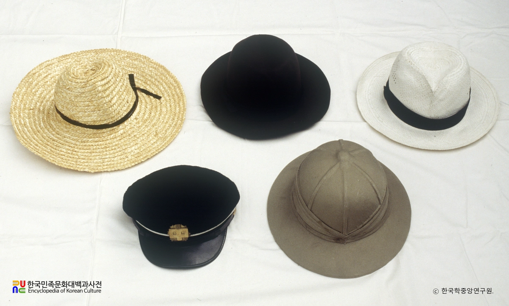

그건 바로 모자 쓰는 문화
동서양, 안가리고
어디든간에 성인 남자거나
좀 예를 보여야 하는 자리면
모자는 거의 필수였음
하다못해 플랫캡이라도 써야 외출이 가능했고
기본 예의 였음
물론 자동차 문화라든가 여러요인이 있지만
근현대 와서 워낙 순식간에 사라진 문화라 신기

그건 바로 모자 쓰는 문화
동서양, 안가리고
어디든간에 성인 남자거나
좀 예를 보여야 하는 자리면
모자는 거의 필수였음
하다못해 플랫캡이라도 써야 외출이 가능했고
기본 예의 였음
물론 자동차 문화라든가 여러요인이 있지만
근현대 와서 워낙 순식간에 사라진 문화라 신기
옛날엔 머리 샴푸로 잘 못깜아서 그런거 아님?
모자 쓸 이유가 없어져서
모자쓰면 탈모생김
밖임
아님
옷이 곧 신분이었으니까 그런 것 같은데
'실외탈모 금지'
아 그러거보니까 저런데부터 시작된건가 ㅋㅋㅋ
어릴땐 모자쓰는거 존나싫어했는데 지금은 머리스타일링하기 귀찮아서 모자만씀
에드워드8세랑 케네디가 없앤거 아니냐?

아웃도어 활동 중에는 많이 씀
헤어셋팅을 하니까.
이제 잘씻으니까